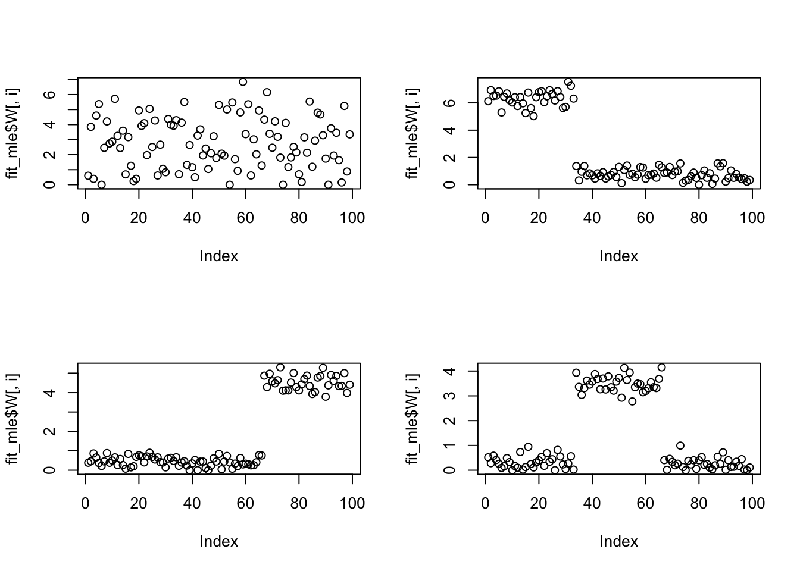
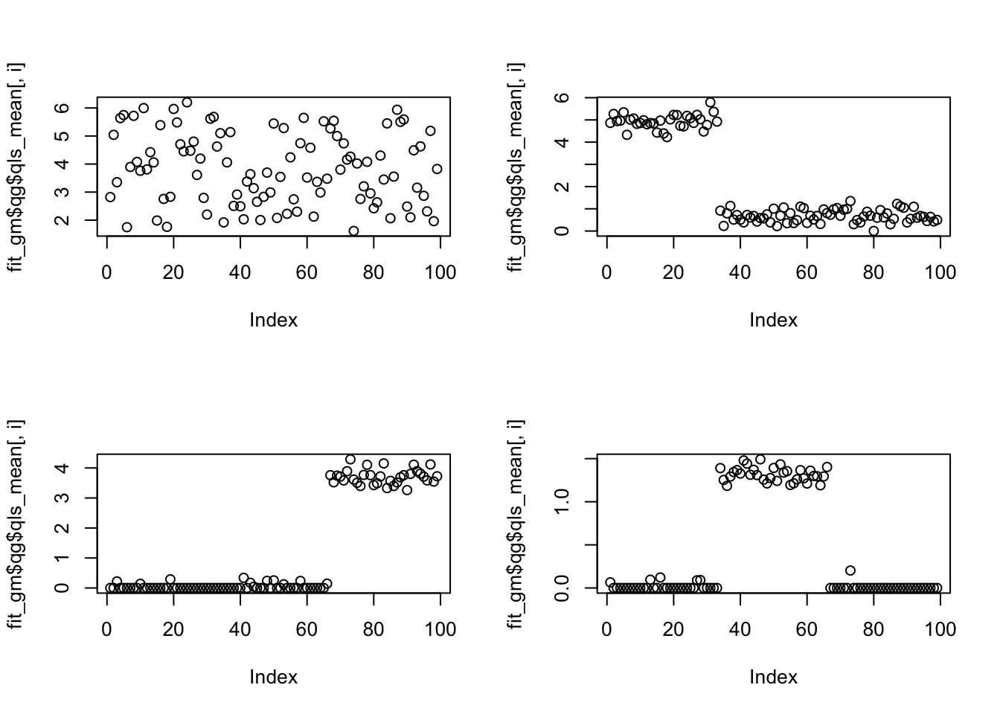
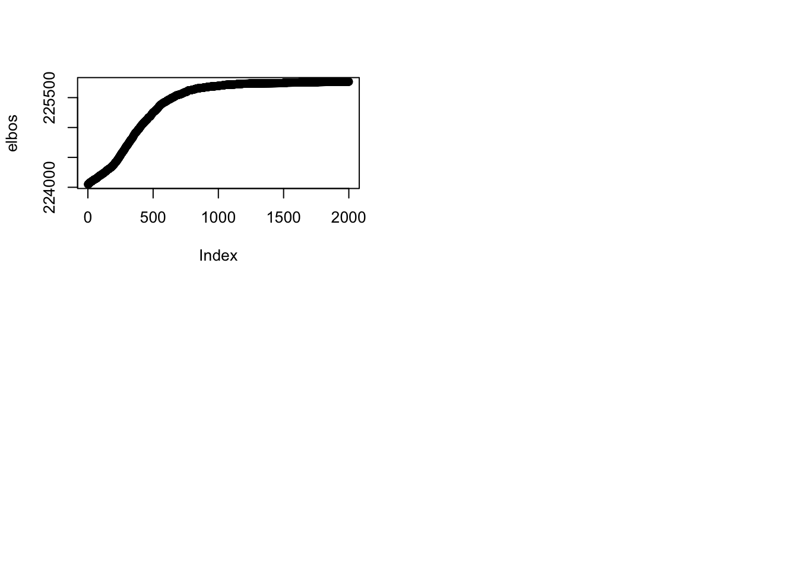

Last updated: 2020-03-05
Checks: 6 1
Knit directory: ebpmf_demo/
This reproducible R Markdown analysis was created with workflowr (version 1.5.0). The Checks tab describes the reproducibility checks that were applied when the results were created. The Past versions tab lists the development history.
Great! Since the R Markdown file has been committed to the Git repository, you know the exact version of the code that produced these results.
Great job! The global environment was empty. Objects defined in the global environment can affect the analysis in your R Markdown file in unknown ways. For reproduciblity it’s best to always run the code in an empty environment.
The command set.seed(20190923) was run prior to running the code in the R Markdown file. Setting a seed ensures that any results that rely on randomness, e.g. subsampling or permutations, are reproducible.
Great job! Recording the operating system, R version, and package versions is critical for reproducibility.
To ensure reproducibility of the results, delete the cache directory experiment_ebpm_gammamix3_cache and re-run the analysis. To have workflowr automatically delete the cache directory prior to building the file, set delete_cache = TRUE when running wflow_build() or wflow_publish().
Great job! Using relative paths to the files within your workflowr project makes it easier to run your code on other machines.
Great! You are using Git for version control. Tracking code development and connecting the code version to the results is critical for reproducibility. The version displayed above was the version of the Git repository at the time these results were generated.
Note that you need to be careful to ensure that all relevant files for the analysis have been committed to Git prior to generating the results (you can use wflow_publish or wflow_git_commit). workflowr only checks the R Markdown file, but you know if there are other scripts or data files that it depends on. Below is the status of the Git repository when the results were generated:
Ignored files:
Ignored: .RData
Ignored: .Rhistory
Ignored: .Rproj.user/
Ignored: analysis/anchor_word_model_swimmer_cache/
Ignored: analysis/compare_GH_cache/
Ignored: analysis/compare_speeds_ebpmf_cache/
Ignored: analysis/ebpm_two_gamma_debug2_cache/
Ignored: analysis/experiment_ebpm_gammamix2_cache/
Ignored: analysis/experiment_ebpm_gammamix3_cache/
Ignored: analysis/experiment_ebpm_gammamix_cache/
Ignored: analysis/investigate_gamma_poisson_cache/
Ignored: analysis/nmf_anchor_word3_cache/
Ignored: analysis/nmf_anchor_word4_cache/
Ignored: analysis/nmf_sparse10_cache/
Ignored: analysis/nmf_sparse11_cache/
Ignored: analysis/nmf_sparse8_cache/
Ignored: analysis/nmf_sparse9_cache/
Ignored: analysis/test_ebpmf_two_gamma_fast_cache/
Untracked files:
Untracked: Rplot.png
Untracked: Untitled.Rmd
Untracked: Untitled.html
Untracked: analysis/.ipynb_checkpoints/
Untracked: analysis/Experiment_ebpmf_simple.Rmd
Untracked: analysis/anchor_word_model1.Rmd
Untracked: analysis/anchor_word_model2.Rmd
Untracked: analysis/anchor_word_model3.Rmd
Untracked: analysis/compare_speeds_ebpmf.Rmd
Untracked: analysis/debug_ebpmf_two_gamma.Rmd
Untracked: analysis/demo_ebpmf_beta_gamma.Rmd
Untracked: analysis/demo_ebpmf_two_gamma2.Rmd
Untracked: analysis/demo_ebpmf_two_gamma_cache_old/
Untracked: analysis/draft.Rmd
Untracked: analysis/ebpm_gamma_mixture_experiment.Rmd
Untracked: analysis/ebpm_gh_gamma.Rmd
Untracked: analysis/ebpm_two_gamma_test.R
Untracked: analysis/ebpm_two_gamma_test.Rmd
Untracked: analysis/ebpmf.Rmd
Untracked: analysis/ebpmf_demo.Rmd
Untracked: analysis/ebpmf_rank1_demo2.Rmd
Untracked: analysis/ebpmf_two_gamma_debug.Rmd
Untracked: analysis/investigate_gamma_poisson.Rmd
Untracked: analysis/investigate_nmf_sparse.Rmd
Untracked: analysis/nmf_anchor_word4.Rmd
Untracked: analysis/nmf_sparse11.Rmd
Untracked: analysis/nmf_symm.Rmd
Untracked: analysis/play_prior.Rmd
Untracked: analysis/play_shrinkage_methods.Rmd
Untracked: analysis/plot_g.Rmd
Untracked: analysis/rebayes_vignette.Rmd
Untracked: analysis/softmax_experiments.ipynb
Untracked: analysis/test_ebpmf_two_gamma_fast.Rmd
Untracked: cache/
Untracked: code/anchor-word-recovery/
Untracked: data/anchor_word_model1.csv
Untracked: data/nmf_anchor_word3_A.csv
Untracked: data/nmf_anchor_word3_W.csv
Untracked: data/nmf_anchor_word3_X.csv
Untracked: data/nmf_anchor_word4_A.csv
Untracked: data/nmf_anchor_word4_W.csv
Untracked: data/nmf_sparse8_fit_ebpmf_gm_mle.Rds
Untracked: data/nmf_sparse8_fit_ebpmf_gm_mlem.Rds
Untracked: data/swimmer.mat
Untracked: figure/
Untracked: verbose_log_1571583163.21966.txt
Untracked: verbose_log_1571583324.71036.txt
Untracked: verbose_log_1571583741.94199.txt
Untracked: verbose_log_1571588102.40356.txt
Unstaged changes:
Modified: .gitignore
Modified: analysis/Compare_ebpmf_nmf.Rmd
Modified: analysis/Compare_ebvaepm_ebpm.Rmd
Modified: analysis/Experiment_ebpmf_rank1.Rmd
Modified: analysis/demo_ebpm_beta_gamma2.Rmd
Modified: analysis/dnbinom.Rmd
Modified: analysis/ebpm_demo.Rmd
Modified: analysis/nmf_anchor_word2.Rmd
Modified: analysis/nmf_anchor_word3.Rmd
Modified: analysis/nmf_sparse.Rmd
Modified: analysis/nmf_sparse2.Rmd
Modified: analysis/nmf_sparse3.Rmd
Modified: analysis/nmf_sparse6.Rmd
Modified: analysis/nmf_sparse7.Rmd
Modified: analysis/nmf_sparse8.Rmd
Modified: analysis/nmf_sparse9.Rmd
Modified: analysis/numerical_lgamma.Rmd
Modified: analysis/softmax_experiments.Rmd
Modified: analysis/test_ebpm_gamma_mixture_single_scale.Rmd
Modified: code/misc.R
Modified: data/nmf_sparse8_fit_ebpmf_gm.Rds
Note that any generated files, e.g. HTML, png, CSS, etc., are not included in this status report because it is ok for generated content to have uncommitted changes.
These are the previous versions of the R Markdown and HTML files. If you’ve configured a remote Git repository (see ?wflow_git_remote), click on the hyperlinks in the table below to view them.
| File | Version | Author | Date | Message |
|---|---|---|---|---|
| Rmd | 4638e1f | zihao12 | 2020-03-05 | experiment_ebpm_gammamix3.Rmd |
| html | 8640fcd | zihao12 | 2020-03-05 | Build site. |
| Rmd | a6b3933 | zihao12 | 2020-03-05 | experiment_ebpm_gammamix3.Rmd |
| Rmd | 2b18fc7 | zihao12 | 2020-03-05 | add experiment on ebpm gammmix |
rm(list = ls())
library("NNLM")
devtools::load_all("../ebpm")
library("ebpmf.alpha")
source("code/misc.R")
## implement `ebpm_gamma_mixture` with my way of selecting the grids
## k is the number of clusters
## vars is the grids for variance of each cluster
ebpm_gamma_mixture_ <- function(x, s = 1, g_init = NULL, k = 2, vars = 10^seq(-5,5,1)){
# if(is.null(g_init)){
# mus = as.vector(kmeans(x, centers = k, nstart = 25, iter.max = 100)$centers)
# grid = construct_grid(mus, vars)
# g_init = grid2gammamix(grid)
# }
mus = as.vector(kmeans(x, centers = k, nstart = 100, iter.max = 100)$centers)
grid = construct_grid(mus, vars)
g_init = grid2gammamix(grid)
fit = ebpm::ebpm_gamma_mixture2(x = x, s = 1, g_init = g_init)
## adjust for `s`
fit$fitted_g$scale = (1/s) * fit$fitted_g$scale
return(fit)
}
## construct grid when cluster means, and variance-grids are given
## only consider s = 1 here
construct_grid <- function(mus, vars){
M = length(mus)
D = length(vars)
a = c()
b = c()
for(m in 1:M){
for(d in 1:D){
b_ = mus[m]/vars[d]
a = c(a, b_ * mus[m])
b = c(b, b_)
}
}
return(list(a = a, b = b))
}
grid2gammamix <- function(grid, pi = NULL){
n = length(grid$a)
if(is.null(pi)){pi = replicate(n, 1/n)}
return( gammamix(pi = pi, shape = grid$a, scale = 1/grid$b) )
}We simulate data with 3 factors with a “block-like” structure.
set.seed(123)
n = 99
p = 300
k= 4
mfac = 2.5 # controls PVE of dense factor
L = matrix(0, nrow=n, ncol=k)
F = matrix(0, nrow=p, ncol=k)
L[1:(n/3),1] = 1
L[((n/3)+1):(2*n/3),2] = 1
L[((2*n/3)+1):n,3] = 1
L[,4] = 1+mfac*runif(n)
F[1:(p/3),1] = 1+10*runif(p/3)
F[((p/3)+1):(2*p/3),2] = 1+10*runif(p/3)
F[((2*p/3)+1):p,3] = 1+10*runif(p/3)
F[,4]= 1+mfac*runif(p)
lambda = L %*% t(F)
X = matrix(rpois(n=length(lambda),lambda),nrow=n)fit_mle = NNLM::nnmf(A = X, k = k, loss = "mkl", method = "scd", max.iter = 1000, verbose = FALSE)
init = list(qg = initialize_qg_from_LF(L0 = fit_mle$W, F0 = t(fit_mle$H)))verbose = FALSE
maxiter = 1000
tol = -1e+7 ## just in case
runtime <- system.time(
fit_gm <- ebpmf.alpha::ebpmf(X, K = k,pm_func = ebpm::ebpm_gamma_mixture2, init = init,
maxiter = maxiter, verbose = verbose, tol = tol)
)
fit_gm[["runtime"]] = runtimepar(mfrow = c(2,2))
for(i in 1:4){
plot(fit_mle$W[,i])
}
| Version | Author | Date |
|---|---|---|
| 8640fcd | zihao12 | 2020-03-05 |
par(mfrow = c(2,2))
for(i in 1:4){
plot(fit_gm$qg$qls_mean[,i])
}
Do another 1000 iterations; note that I will re-estimate the grids …
init2 = list(qg = fit_gm$qg)
runtime <- system.time(
fit_gm2 <- ebpmf.alpha::ebpmf(X, K = k,pm_func = ebpm::ebpm_gamma_mixture2, init = init2,
maxiter = maxiter, verbose = verbose, tol = tol)
)
fit_gm2[["runtime"]] = runtimepar(mfrow = c(2,2))
for(i in 1:4){
plot(fit_gm2$qg$qls_mean[,i])
}
| Version | Author | Date |
|---|---|---|
| 8640fcd | zihao12 | 2020-03-05 |
elbos <- c(fit_gm$ELBO, fit_gm2$ELBO)
plot(elbos)
| Version | Author | Date |
|---|---|---|
| 8640fcd | zihao12 | 2020-03-05 |
fit_gm$runtime user system elapsed
306.556 18.714 87.889 fit_gm2$runtime user system elapsed
307.206 19.145 88.333
sessionInfo()R version 3.5.1 (2018-07-02)
Platform: x86_64-apple-darwin15.6.0 (64-bit)
Running under: macOS 10.14
Matrix products: default
BLAS: /Library/Frameworks/R.framework/Versions/3.5/Resources/lib/libRblas.0.dylib
LAPACK: /Library/Frameworks/R.framework/Versions/3.5/Resources/lib/libRlapack.dylib
locale:
[1] en_US.UTF-8/en_US.UTF-8/en_US.UTF-8/C/en_US.UTF-8/en_US.UTF-8
attached base packages:
[1] stats graphics grDevices utils datasets methods base
other attached packages:
[1] ebpmf.alpha_0.1.9 ebpm_0.0.0.9021 testthat_2.2.1 NNLM_0.4.2
loaded via a namespace (and not attached):
[1] gtools_3.8.1 tidyselect_0.2.5 xfun_0.8
[4] remotes_2.1.0 purrr_0.3.2 colorspace_1.4-1
[7] htmltools_0.3.6 usethis_1.5.1 yaml_2.2.0
[10] rlang_0.4.1 pkgbuild_1.0.3 mixsqp_0.2-3
[13] later_0.8.0 pillar_1.4.2 glue_1.3.1
[16] withr_2.1.2 RcppZiggurat_0.1.5 sessioninfo_1.1.1
[19] stringr_1.4.0 munsell_0.5.0 gtable_0.3.0
[22] workflowr_1.5.0 devtools_2.2.1.9000 codetools_0.2-16
[25] memoise_1.1.0 evaluate_0.14 knitr_1.25
[28] callr_3.2.0 httpuv_1.5.1 ps_1.3.0
[31] parallel_3.5.1 Rfast_1.9.8 Rcpp_1.0.2
[34] promises_1.0.1 backports_1.1.5 scales_1.0.0
[37] desc_1.2.0 pkgload_1.0.2 fs_1.3.1
[40] ggplot2_3.2.1 digest_0.6.22 stringi_1.4.3
[43] processx_3.3.1 dplyr_0.8.1 numDeriv_2016.8-1.1
[46] gsl_2.1-6 rprojroot_1.3-2 grid_3.5.1
[49] cli_1.1.0 tools_3.5.1 magrittr_1.5
[52] lazyeval_0.2.2 tibble_2.1.3 crayon_1.3.4
[55] whisker_0.3-2 pkgconfig_2.0.3 ellipsis_0.3.0
[58] prettyunits_1.0.2 assertthat_0.2.1 rmarkdown_1.13
[61] rstudioapi_0.10 R6_2.4.0 git2r_0.26.1
[64] compiler_3.5.1